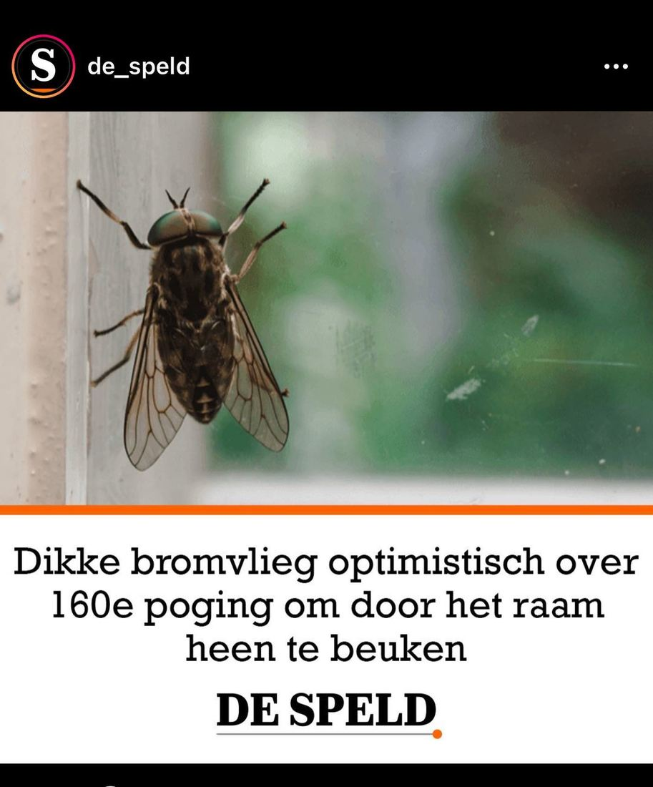

Grijze runderdaas, geen bromvlieg
25 april 2022 · De Speld
- Op de foto
- Grijze runderdaas
- Het ging over
- Bromvlieg

Leuk om @de_speld te verwelkomen op onze natuurspeld pagina! Dit is natuurlijk geen ‘bromvlieg’ maar een Grijze runderdaas. Hopelijk hebben we vaker deze samenwerking 🫢